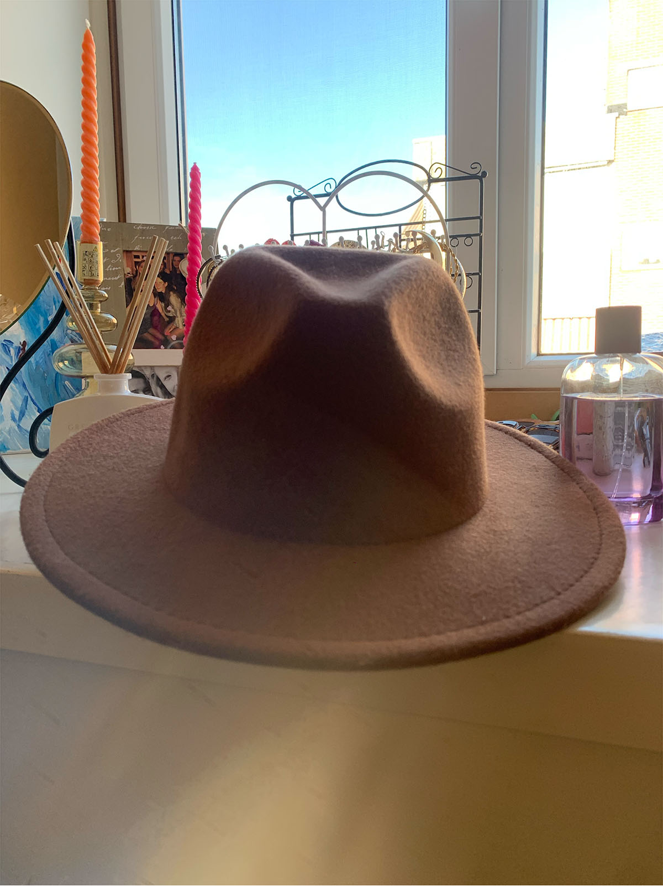
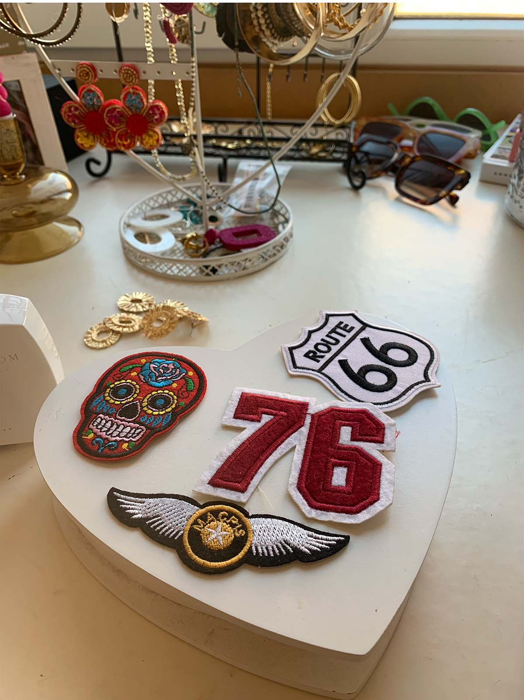
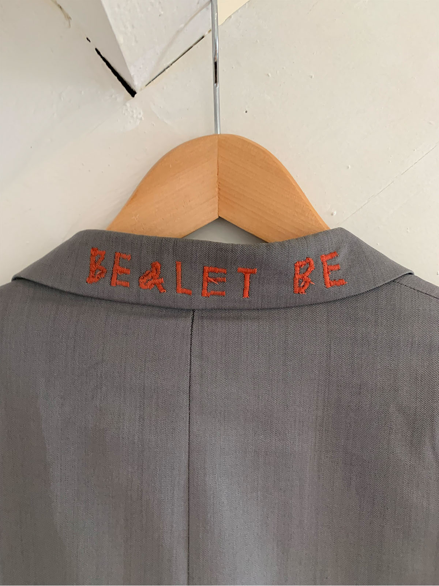

DIY
Tips & Tutorials
 Patches of andere versiering op je kleding
Stap 1.
Kies een vintage kledingstuk uit die je wilt upgraden
Stap 2.
De meeste patches kan je erop strijken, dat is heel eenvoudig. Kies een plek uit.
Stap 3.
Pak bakpapier wat je over de patch doet zodat je niet de patch verbrand Strijk hier 1 minuut overheen. (pak de randen goed mee)
Blazers pimpen
Stap 1.
Kies een vintage blazer uit. (je kan dit ook bij een trui of shirt doen maar dat is moeilijker)
Stap 2.
Pak je naald en draad. Kies hoe lang en hoe ver je de draden wilt hebben en waar.
Stap 3.
Teken eerst met een pen hoe je de tekst gaat naaien. Het resultaat is zo leuk!
